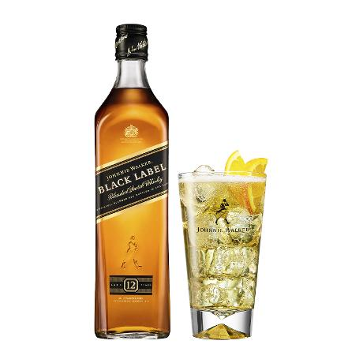
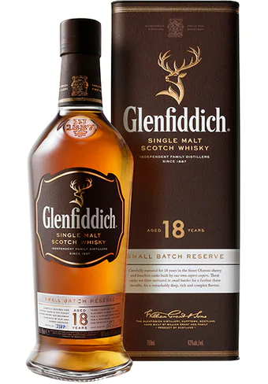
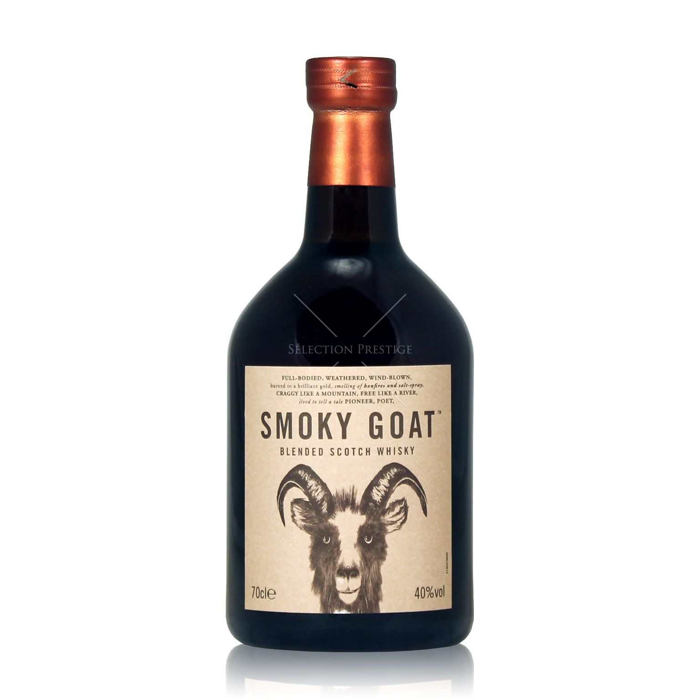

- Johnnie Walker Black Label
- JOHNNIE WALKER悠久歷史中，首次推出雪莉風味的威士忌酒款。以產品家族經典特色交織雪莉風味，激盪出超乎想像新風味，馥郁豐醇回味無窮。 
- The Glenfiddich 18 Years Old Single Malt Scotch Whisky
- 格蘭菲迪18年單一純麥威士忌, 對威士忌鑑賞家而言，更是酒中至尊所不可或缺之珍品，經多年儲存於Oloroso雪莉桶和傳統波本橡木桶熟成，帶著均衡的橡木和麥芽味，優雅柔順。口感帶著蘋果芬芳與橡木桶雅緻氣息圓潤，餘味溫和繚繞而濃郁。 
- Smoky Goat Blended Scotch Whisky
- Smoky Goat is a wonderfully-titled blended Scotch whisky from Whiskey Union (Diageo's experimental whisky umbrella) made with the desire to perfectly balance intense peaty elements with full-bodied sweetness. The goat on the label looks particularly blasé. 